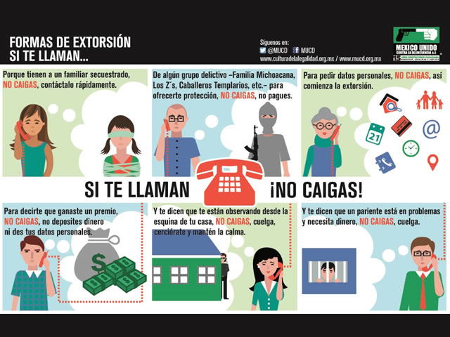

"EXTORCION"
.
NATURALEZA JURIDICA
La extorsión es una figura que se encuentra entre los delitos de: - APODERAMIENTO, ya que hay ánimo de lucro; - ESTAFA, porque requiere que el sujeto pasivo realice u omita un acto o negocio jurídico; y - AMENAZAS, porque el sujeto activo coacciona al pasivo para la realización del negocio jurídico. Este delito tiene una ubicación independiente. Aunque se relaciona con otros, es una figura distinta con sus propias características. Además, la extorsión es un delito pluriofensivo: se ataca a varios bienes jurídicos: propiedad, integridad física y libertad.
TIPOS DE FRAUDE
1. Llaman por teléfono al domicilio, dicen ser miembros de este grupo criminal y que han secuestrado a un ser querido. Ordenan realizar depósitos en varias cuentas bancarias lo antes posible, de lo contrario la persona secuestrada será asesinada. Este tipo de extorsión es la más común.
2. Derecho de piso o “renteada”: Esta práctica consiste en el cobro de una renta a comerciantes establecidos y ambulantes e incluso empresas, inició al norte del país y se presentan ante la víctima un grupo de 4 a 6 personas armadas que bajo amenazas, venden "protección" a la víctima. Las rentas se pagan en forma semanal, quincenal y mensual en efectivo. Se debe destacar que a diferencia de las llamadas de extorsión, en el "derecho de piso", sí se presentan los extorsionadores ante sus víctimas y sí existe un alto riesgo para las mismas. Llegan a obligar pagos que van de los mil pesos a los 500 mil pesos o más.
3. Hablan al domicilio, se hacen pasar por funcionarios de gobierno y solicitan datos personales cómo dirección y nombre del responsable de la línea telefónica, después de que los datos personales son confirmados comienza la extorsión
4. Se hacen pasar por comandantes o policías estatales, hablan por teléfono al domicilio y dicen que heriste a un elemento suyo, que no los dejas trabajar o que denunciaste a policías sin motivo alguno, te dicen que por "reparos" a los policías debes dar dinero, si no accedes es cuando inician las groserías y la manera de extorsión cambia, te dicen: “Somos la Familia Michoacana y vamos entrar a tu casa a decapitar a todos si no depositas dinero en cuentas bancarias”, relata un ciudadano que vivió esta extorsión no lograda tras colgar el telefono.
5. Concurso Boletazo. Usualmente llaman por teléfono o envían mensaje de texto y aseguran ganaste un automóvil ultimo modelo. Cuando llaman solicitan tus datos para ingresarlos en alguna supuesta base de datos a fin de hacerte llegar hasta la puerta de tu casa el “regalo”. Después de la llamada pueden transcurrir horas o días y llaman de nuevo y se identifican como miembros de un grupo del crimen organizado. Mientras que en el mensaje de texto, piden que envíes datos personales, nombre, domicilio, número telefónico y confirmes si deseas el obsequio, después inicia la extorsión.